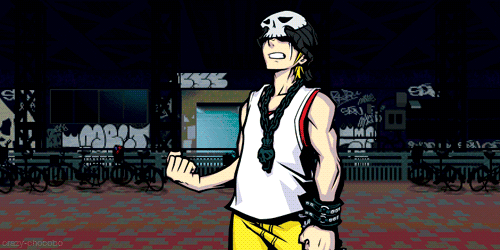

.
Neku At fifteen, Neku is an ardent fan of graffiti, but far less enthusiastic about forging relationships with other people. When the Reapers' Game throws him into contact with other Players, he has two choices: open up... or get picked off.
Shiki Fashionable and fabulous at fifteen, Shiki knows clothes. While she puts on a cheerful face to lend Neku some much-needed moral support, deep down she harbors a secret... She never parts with her homemade stuffed animal, Mr. Mew; to survive, Neku can never part with her.
Beat Hot-blooded and hard-headed, Beat is the polar opposite of Neku—even if they are the same age. Still, despite his emotional outbursts, he has a big heart. He's always ready to throw down and ollie into combat on his board, with Rhyme right there beside him.

Joshua It's quickly evident Joshua is clever beyond his fifteen years—as sly as they come. Unfortunately, his insufferably snotty attitude only serves to widen the gulf between him and Neku...but his knowledge, especially about the Game, does earn him some points.
Rhyme Rhyme's earnest and hard-working attitude proves a big help to Neku and Shiki early on, as well as to her partner, Beat. She has an addiction to adages and no shortage of smiles, and without her, the others would be lost.